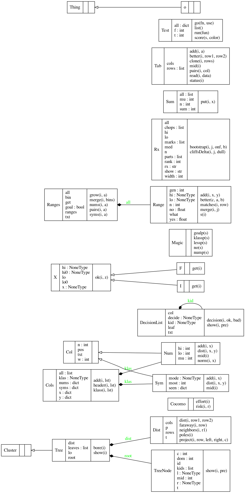

Module bnbad.about
About this code
Is your software ethical? Does its own source code holds a representation of user goals and uses those at runtime to guide its own behavior? Can that software report how well the user goals are being achieved and can it suggest how to adjust the system, to better achieve those goals?
Do you want to make your software more ethical?
BnBAD is a
collection of data structures that support ethical the kind of
ethical reasoning listed above.
It is a multi-objective optimizer
that reasons by breaking up problems into regions of bad and
better, then looks for ways on how to jump between those regions.
BnBAD might be an ethical choice in domains:
- when users have to trade-off competing goals,
- when succinct explanations are needed about what the system is doing,
- when those explanations have to include ranges within which it is safe to change the system,
- when guidance is needed for how to improve things (or know what might make things worse);
- when thing being studied is constantly changing so:
- we have to perpetually check if the current system is still trustworthy
- and, if not, we need to update our models
Technical notes:
badandbetterare score via Zitler's continuous domination predicate- Examples are clustered in goal
space and the
bettercluster is the one that dominates all the otherbadclusters. - Numerics are then broken up into just a few ranges
using a bottom-up merging process
guided by the ratio of
bettertobadin each range. - These numeric ranges,
and the symbolic ranges are then used to build a succinct decision list
that can explain what constitutes
betterbehavior. This decision list has many uses:- Planning: The deltas in the conditions that lead to the leaves of that
decision list can
offer guidance on how to change
badtobetter. - Monitoring: The opposite of planning. Learn what can change
bettertobad, then watch out for those things. - Anomaly detection and incremental certification: The current decision list can be trusted as long as new examples fall close to the old examples seen in the leaves of the decision list.
- Stream mining: Stop learning while the anomaly detector is not triggering. Track the anomalies seen each branch of the decision list. Update just the branches that get too many anomalies (if that ever happens).
- Planning: The deltas in the conditions that lead to the leaves of that
decision list can
offer guidance on how to change
Classes
In my code Thing and o are basic utility classes. Things
know how to pretty-print themselves while o classes are
basic containers for things with names slots (but no methods).
Thing
o
Cluster
Bore :has 1 :to 2 :of Tab
Tree :has 1 :to * :of Tab
Col(txt,pos)
Num(mu,lo,hi)
Sym(mode)
Cols :has 1 :to * :of Col
Dist :has 1 :to 1 :of Tab
Range(lo,hi)
Ranges :has 1 :to * :of Range
Tab(rows) :has 1 :to 1 :of Cols
Test
The real work here is done by Tables.
Such Tables are the core of this design.
When data is read from disk
it is entered into a Table. When collecting data from some
process, that data is incrementally written into a Table.
If we recursively cluster data, each level of that recursion
is a table.
into tables. that have rows and cols.
Each row is some example of y=f(x) where y and x
can have multiple values (and when |y|>1, then this
then becomes a multi-objective reasoner).
Our
rows are just plain old Python lists. We can
compute the distance between rows as well as checking
if the goals in one row are "better than" (also known as
"dominates") the other.
Col objects summarize what was seen in each column. There are
two general kinds of Cols (Numerics and Symbols) and
which can be categoriesed into
yvalues:- numeric goals (that we might want to maximize or minimze)
- symbolic gaols (that are also called
klasses) xvalues:- which can be numeric or symbolic.
Details:

Expand source code
"""
## About this code
Is your software ethical? Does its own source code holds a
representation of user goals and uses those at runtime to guide
its own behavior? Can that software report how well the user goals
are being achieved and can it suggest how to adjust the system, to
better achieve those goals?
Do you want to make your software more ethical? BnBAD is a
collection of data structures that support ethical the kind of
ethical reasoning listed above. It is a multi-objective optimizer
that reasons by breaking up problems into regions of `bad` and
`better`, then looks for ways on how to jump between those regions.
BnBAD might be an ethical choice in domains:
- when users have to trade-off competing goals,
- when succinct explanations are needed about what the system is doing,
- when those explanations have to include ranges within which it is safe
to change the system,
- when guidance is needed for how to improve things
(or know what might make things worse);
- when thing being studied is constantly changing so:
- we have to perpetually check if the current system is still trustworthy
- and, if not, we need to update our models
Technical notes:
- `bad` and `better` are score via
[Zitler's continuous domination predicate](#bnbad.Tab.better)
- Examples are clustered in goal
space and the `better` cluster is the one that dominates all the
other `bad` clusters.
- Numerics are then broken up into just a few ranges
using a bottom-up merging process
guided by the ratio of `better` to `bad` in each range.
- These numeric ranges,
and the symbolic ranges are then used to build a succinct decision list
that can explain what constitutes `better` behavior.
This decision list has many uses:
- _Planning_: The deltas in the conditions that lead to the leaves of that
decision list can
offer guidance on how to change
`bad` to `better`.
- _Monitoring_: The opposite of planning. Learn what can change `better`
to `bad`, then watch out for those things.
- _Anomaly detection and incremental certification:_
The current decision list can be trusted as long as new examples
fall close to the old examples seen in the leaves of the decision list.
- _Stream mining_: Stop learning while the anomaly detector is not
triggering. Track the anomalies seen each branch of the decision list.
Update just the branches that get too many anomalies
(if that ever happens).
## Classes
In my code `Thing` and `o` are basic utility classes. `Thing`s
know how to pretty-print themselves while `o` classes are
basic containers for things with names slots (but no methods).
Thing
o
Cluster
Bore :has 1 :to 2 :of Tab
Tree :has 1 :to * :of Tab
Col(txt,pos)
Num(mu,lo,hi)
Sym(mode)
Cols :has 1 :to * :of Col
Dist :has 1 :to 1 :of Tab
Range(lo,hi)
Ranges :has 1 :to * :of Range
Tab(rows) :has 1 :to 1 :of Cols
Test
The real work here is done by `Tab`les.
Such `Tab`les are the core of this design.
When data is read from disk
it is entered into a `Tab`le. When collecting data from some
process, that data is incrementally written into a `Tab`le.
If we recursively cluster data, each level of that recursion
is a table.
into tables. that have `rows` and `cols`.
Each row is some example of `y=f(x)` where `y` and `x`
can have multiple values (and when `|y|>1`, then this
then becomes a multi-objective reasoner).
Our `rows` are just plain old Python lists. We can
compute the `dist`ance between rows as well as checking
if the goals in one row are "better than" (also known as
"dominates") the other.
`Col` objects summarize what was seen in each column. There are
two general kinds of `Col`s (`Num`erics and `Sym`bols) and
which can be categoriesed into
- `y` values:
- numeric goals (that we might want to maximize or minimze)
- symbolic gaols (that are also called `klass`es)
- `x` values:
- which can be numeric or symbolic.
Details:
<img src="design.png">
"""